Şirketlerin saha çalışanlarına görev atadığı, işi harita üzerinden canlı takip ettiği ve teslimi fotoğraf + imza ile kanıtladığı web paneli ve iOS/Android mobil uygulama.
WebYönetim paneli
iOS + AndroidSaha uygulaması
Çok şirketliHer sektöre uyarlanır
05.10.2026Sürüm 1.0
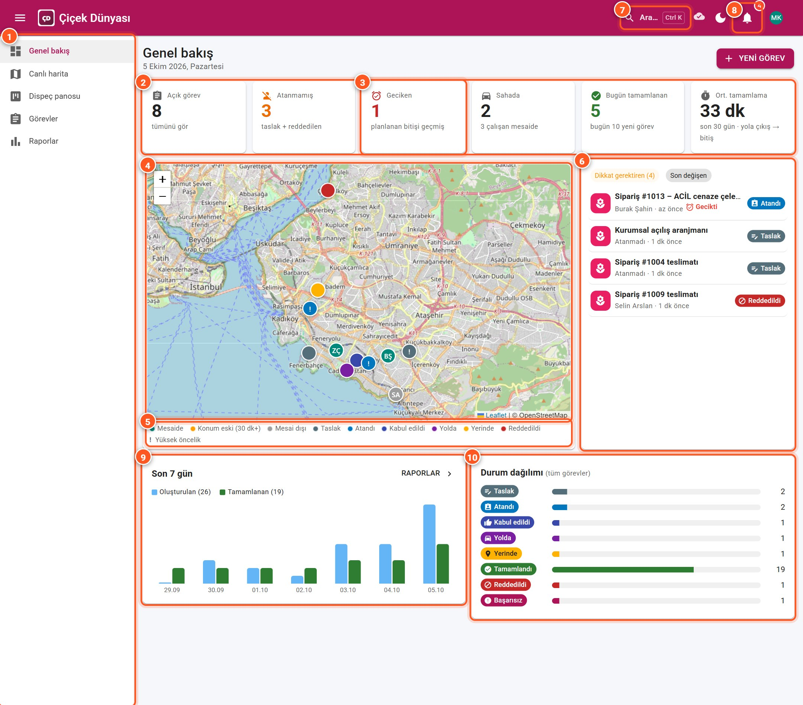
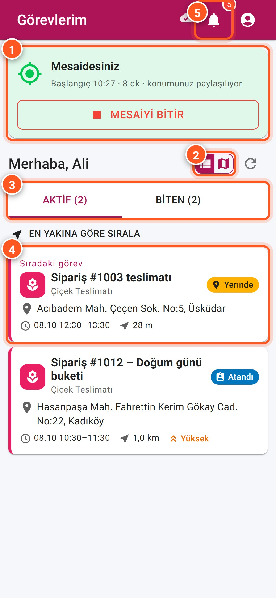
1
Ne sunuyoruz?
Bir çiçekçi siparişi alıcıya teslim ettirebilir; bir tamir firması teknisyenini arızalı cihazın adresine gönderebilir. Görev türleri sabit değildir: her şirket kendi iş türlerini, formlarını ve tamamlama kurallarını tanımlar.
🗺️
Canlı harita
Sahadaki tüm ekip ve açık görevler tek haritada. Çalışanın gün içindeki rotası geriye dönük izlenebilir.
🧩
Esnek görev tipleri
Her iş türü için özel form alanları ve kurallar: imza, fotoğraf sayısı, not, adrese mesafe kontrolü.
📸
Kanıtlı teslim
Fotoğraf, müşteri imzası, teslim alan kişi ve her adımın saat + konum kaydı.
🔔
Anlık bildirim
Görev atanınca kuryeye, kurye reddedince veya iş yapılamayınca dispeçere anında haber.
📶
İnternetsiz çalışma
Bodrum katta, asansörde çekmese bile kurye işine devam eder; veriler bağlantı gelince gönderilir.
👥
Rol bazlı erişim
Yönetici, dispeçer, saha çalışanı ve izleyici yalnızca yetkili oldukları ekranları görür.
📊
Raporlar
Çalışan performansı, başarı oranı, ortalama tamamlama süresi, günlük iş hacmi.
🏢
Çok şirketli altyapı
Tek platformda birden fazla şirket; her şirketin verisi diğerlerinden tamamen ayrı.
🔒
Güvenlik
Şifreli oturum, kısa ömürlü erişim anahtarı, imzalı ve süreli dosya bağlantıları.
🗂️
Dispeç panosu
Görevleri çalışan sütunlarına sürükleyerek atama, geri alma ve günün zaman çizelgesi.
✨
Akıllı atama önerisi
Mesaideki çalışanlar görev adresine uzaklık ve açık iş yüküne göre önerilir.
⏰
Gecikme takibi
Planlanan bitişi geçen işler listede, panoda ve haritada işaretlenir; otomatik bildirim gider.
🔗
Müşteri takip linki
Son müşteri, giriş yapmadan siparişinin yolda olduğunu ve tahmini varışı canlı izler.
💬
Görev içi mesajlaşma
Dispeçer ve saha çalışanı görev üzerinden anlık yazışır.
🎨
Şirket markası ve koyu tema
Her şirketin logosu ve rengi; kullanıcıya özel açık/koyu tema ve yüksek kontrast.
2
Sistem nasıl çalışır?
Web paneli ve mobil uygulama aynı sunucuya bağlanır. Sunucu görevleri, konumları ve kanıtları saklar ve değişiklikleri ilgili ekranlara anlık iletir.
3
Roller, görev tipleri ve görev akışı
Her kullanıcının bir rolü vardır; ekranlar ve izinler role göre belirlenir. Kurallar hem sunucuda hem uygulamada uygulanır.
Yetki
Sistem yöneticisi
Şirket yöneticisi
Dispeçer
Saha çalışanı
İzleyici
Şirket ekleme / pasifleştirme
✔
—
—
—
—
Kullanıcı ve ekip yönetimi
—
✔
—
—
—
Görev tipi tasarlama
—
✔
—
—
—
Görev oluşturma, atama, iptal
—
✔
✔
—
—
Canlı harita, görev listesi, raporlar
—
✔
✔
—
✔ (salt okunur)
Kendine atanan görevi yürütme, kanıt yükleme
—
—
—
✔
—
Mesai süresince konum paylaşımı
—
—
—
✔
—
Görev tipi örnekleri
🌸 Çiçek Teslimatı (Çiçek Dünyası)
🔧 Arıza Onarımı (Hızlı Tamir)
Dispeçerin girdiği alanlar
Alıcı adı, çiçek türü (liste), kart notu
Cihaz (liste), arıza kodu, arıza açıklaması
Sahada doldurulan alanlar
Teslim alan kişi
Kullanılan parçalar, işçilik saati, garanti kapsamında mı
Tamamlama kuralları
Müşteri imzası + en az 1 fotoğraf
Müşteri imzası + en az 2 fotoğraf (önce/sonra) + not
Görev yaşam döngüsü
Her adım; kimin yaptığı, saati ve yapıldığı konumla birlikte kaydedilir. Reddedilen bir görev dispeçer tarafından başka bir çalışana atanabilir.
4
Web Yönetim Paneli
Şirket yöneticisi ve dispeçerlerin bilgisayardan kullandığı panel. Görevler burada oluşturulur, atanır ve sahadaki ekip canlı izlenir.
Ekran 4.1
Şirkete özel giriş ekranı
Her şirket çalışanlarına kendi giriş linkini verir (ör. …/login?sirket=cicek-dunyasi). Giriş ekranı şirketin logosu ve rengiyle açılır; sistem son giriş yapılan şirketi de hatırlar. Web paneli ve mobil uygulama aynı hesapla çalışır ve kullanıcı rolüne göre doğru ekrana yönlendirilir.
wfm.sirketiniz.com
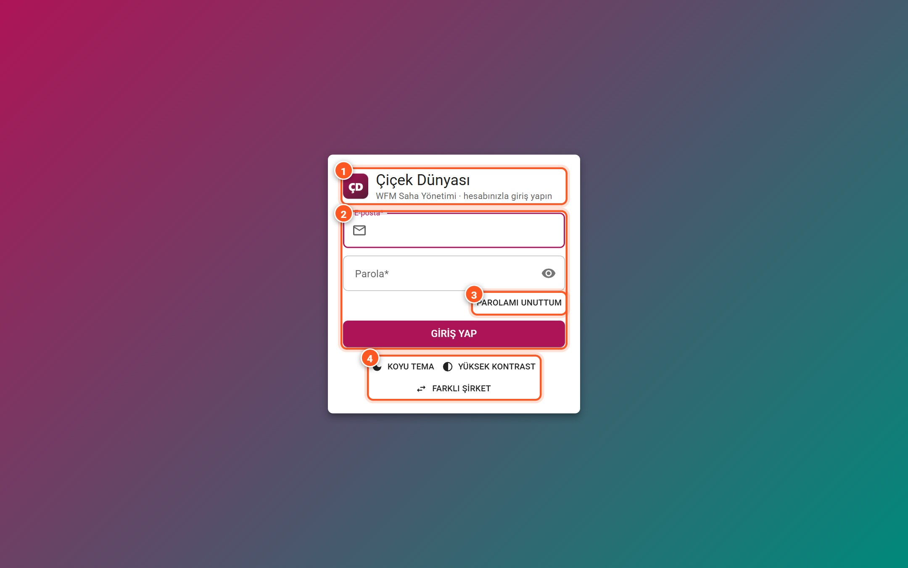
1Şirket logosu ve adı (Şirket ayarları sayfasından yönetilir).
2E-posta ve parola. Parola göz ikonuyla gösterilip gizlenebilir; oturum şifreli saklanır ve otomatik yenilenir.
3Parolamı unuttum: şirket yöneticisine sıfırlama talebi bildirimi gider. Güvenlik için e-postanın kayıtlı olup olmadığı yanıttan anlaşılmaz.
4Koyu tema, yüksek kontrast ve başka şirkete geçiş.
Ekran 4.2
Genel bakış
Dispeçerin günü bu ekranda başlar: sahanın anlık durumu, dikkat gerektiren işler ve günlük iş hacmi tek bakışta. Veriler canlıdır; kurye bir görevi güncellediğinde veya konum gönderdiğinde ekran sayfa yenilenmeden değişir. Kartlara tıklamak ilgili filtreli listeyi açar.
wfm.sirketiniz.com
1Rol bazlı menü. Dispeçer yalnızca yetkili olduğu sayfaları görür; Görev tipleri, Kullanıcılar ve Şirket ayarları yalnızca şirket yöneticisinde çıkar.
2Gösterge kartları: açık, atanmamış, geciken, sahada olan görevler, bugün tamamlananlar ve ortalama tamamlama süresi. Tıklanınca ilgili liste açılır.
3Geciken işler: planlanan bitiş saatini geçen açık görevler kırmızıyla öne çıkar; görevi oluşturana otomatik bildirim gider.
4Canlı harita: görevler durum rengine göre, çalışanlar baş harfleriyle. İşarete tıklanınca özet ve görev detayına bağlantı açılır.
5Harita açıklaması: hangi rengin hangi durumu anlattığı.
6Dikkat gerektiren işler (geciken, atanmamış, reddedilen) ve 'Son değişen' sekmesi.
7Global arama (Ctrl+K): görev, adres, müşteri, kişi veya sayfa.
8Bildirimler: ret, iptal, gecikme ve mesajlar anında düşer.
9Son 7 günde oluşturulan ve tamamlanan görevler.
10Tüm görevlerin duruma göre dağılımı.
Ekran 4.3
Dispeç panosu
Açık görevler çalışan sütunlarında. Dispeçer bir kartı sürükleyip başka bir çalışanın sütununa bırakarak görevi atar; çalışana anında bildirim gider. Yanlışlıkla yapılan atama ekranın altındaki 'Geri al' ile geri alınır.
wfm.sirketiniz.com
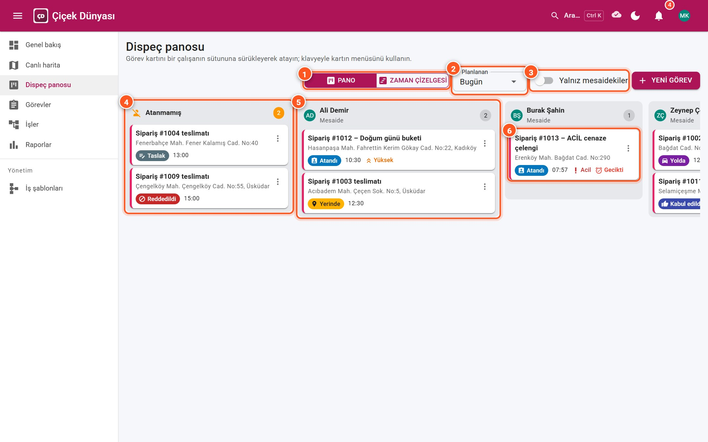
1Pano ve Zaman çizelgesi görünümleri arasında geçiş.
2Planlanan zamana göre filtre (bugün, yarın, bu hafta…).
3Yalnız şu an mesaide olan çalışanların sütunları.
4Atanmamış görevler: taslaklar ve reddedilenler burada bekler.
5Çalışan sütunu: ad, mesai durumu ve üzerindeki açık iş sayısı.
6Görev kartı: durum, planlanan saat, öncelik ve gecikme uyarısı; tıklanınca detay açılır.
Ekran 4.4
Panodan atama (dokunmatik ve klavye ile)
Sürükle-bırak yapamayan kullanıcılar (dokunmatik ekran, klavye) kartın menüsünden de görevi bir çalışana atayabilir veya atamayı kaldırabilir.
wfm.sirketiniz.com
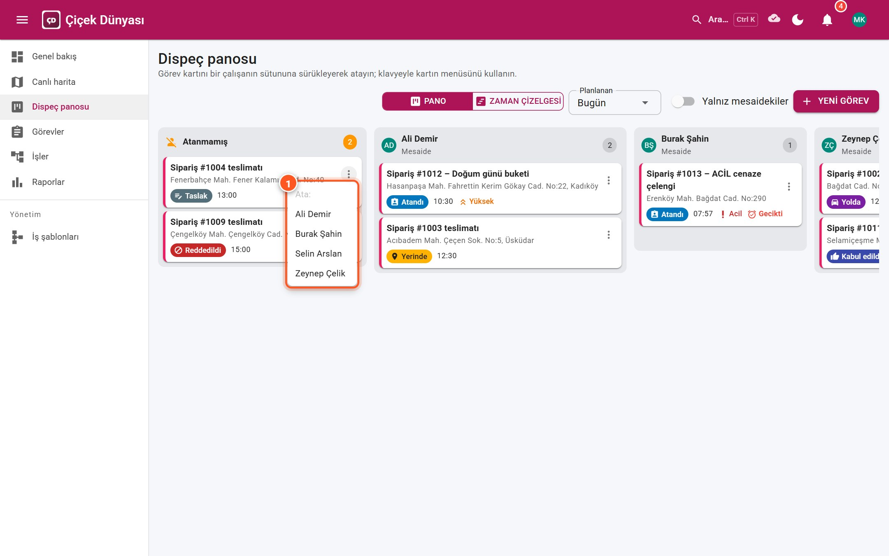
1Ata menüsü: seçilen çalışana görev atanır ve bildirim gider.
Ekran 4.5
Zaman çizelgesi
Günün görevleri çalışan satırlarında 07:00–22:00 ekseninde. Kimin hangi saatte dolu olduğu, çakışmalar ve boşluklar tek bakışta görülür.
wfm.sirketiniz.com
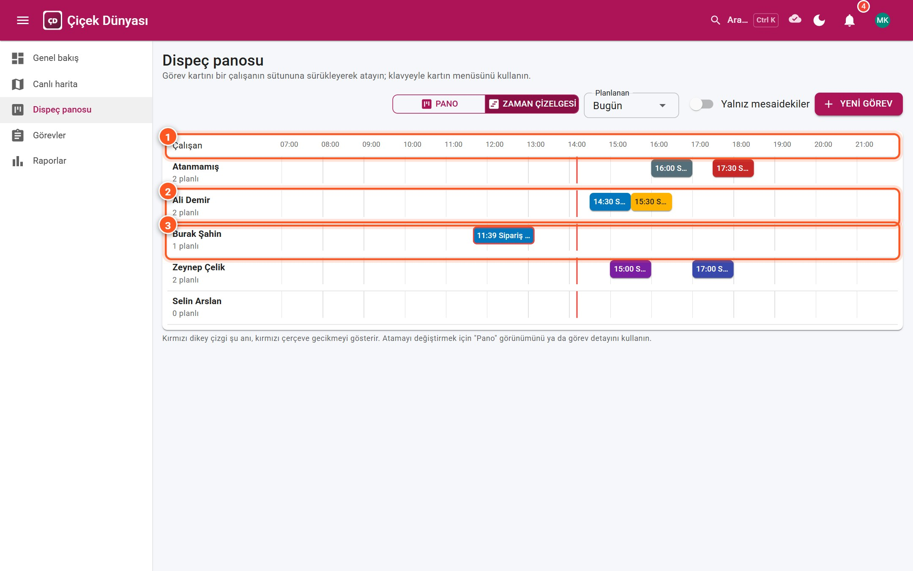
1Saat ekseni.
2Çalışan satırı: görevler planlanan saat aralığında, durum renginde bloklar; bloğa tıklanınca görev açılır.
3Kırmızı çerçeveli blok gecikmiş görevi, kırmızı dikey çizgi şu anı gösterir.
Ekran 4.6
Canlı harita ve rota geçmişi
Sahadaki ekip harita üzerinde canlı izlenir. Mobil uygulama mesai süresince konumu arka planda gönderir; ekran sayfa yenilenmeden güncellenir. Bir çalışan seçilince o günün rotası çizilir.
wfm.sirketiniz.com
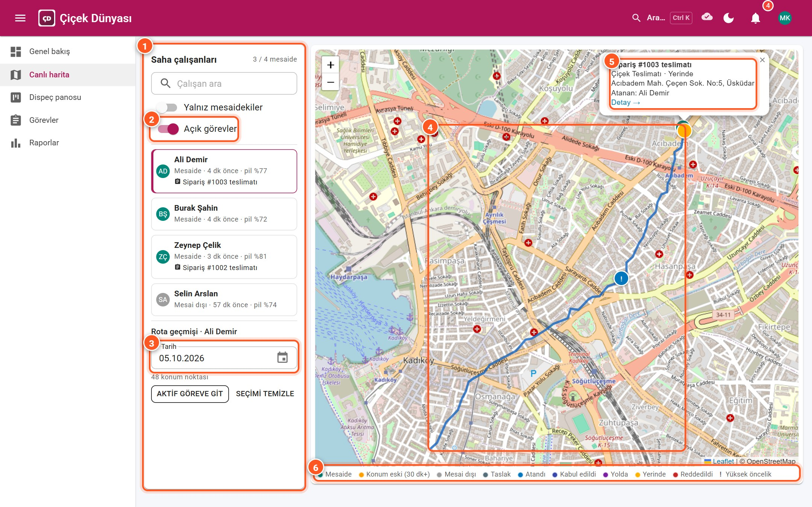
1Çalışan listesi: mesai durumu, son konum zamanı, pil ve aktif görev; arama ve 'yalnız mesaidekiler' filtresi.
2Açık görevleri haritada göster/gizle.
3Rota geçmişi: seçilen çalışanın seçilen gündeki konum noktaları; geçmiş günler de seçilebilir.
4Çalışanın gün içindeki rotası (çizgi).
5İşarete tıklayınca özet açılır: görev, durum, adres, atanan kişi ve detay bağlantısı (çalışan işaretinde mesai, pil ve aktif görev).
6Renk açıklaması: yeşil = mesaide ve konumu güncel, turuncu = konum 30 dk+ eski, gri = mesai dışı.
Ekran 4.7
Görev listesi ve toplu işlemler
Şirketin tüm görevleri tek listede. Filtreler adres çubuğunda tutulduğu için filtreli liste bir linkle paylaşılabilir. Birden fazla görev seçilerek tek seferde atanabilir veya iptal edilebilir.
wfm.sirketiniz.com
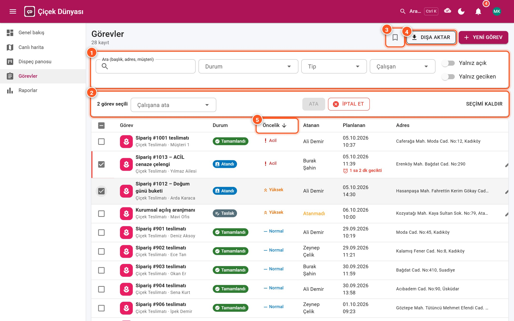
1Filtreler: arama, çoklu durum, görev tipi, çalışan, 'yalnız açık' ve 'yalnız geciken'.
2Toplu işlem çubuğu: seçili görevleri bir çalışana ata veya iptal et.
3Kayıtlı filtreler: sık kullanılan filtreyi kaydet, istersen ekiple paylaş.
4Excel (.xlsx) veya CSV olarak dışa aktarma.
5Sütun başlığına tıklayarak sıralama.
6Sayfalama ve sayfa başına kayıt.
Ekran 4.8
Ekiple paylaşılan kayıtlı filtreler
Dispeçerin her gün baktığı listeler tek tıkla açılır. Paylaşılan filtreler ekipteki herkesin menüsünde görünür.
wfm.sirketiniz.com
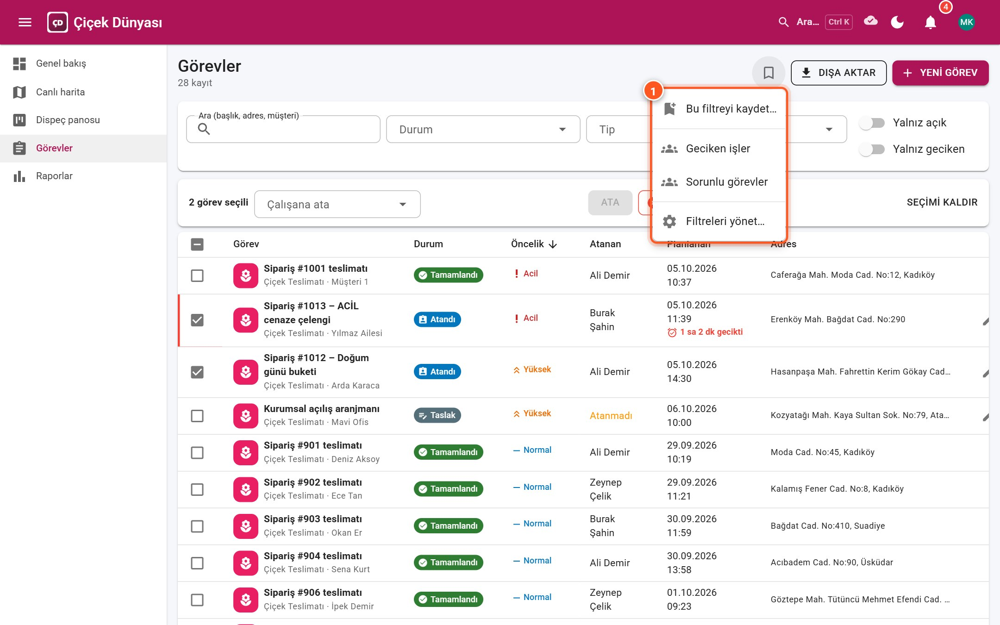
1Kaydet, uygula ve yönet. Ekip simgeli olanlar ('Geciken işler', 'Sorunlu görevler') ekiple paylaşılmıştır.
Ekran 4.9
Yeni görev · Adım 1: Görev
Görev formu dört adımda ilerler; her adım kendi alanlarını doğrular, böylece eksik bilgiyle görev oluşturulamaz. İlk adımda görev tipi seçilir ve o tipe özel alanlar forma kendiliğinden eklenir.
wfm.sirketiniz.com
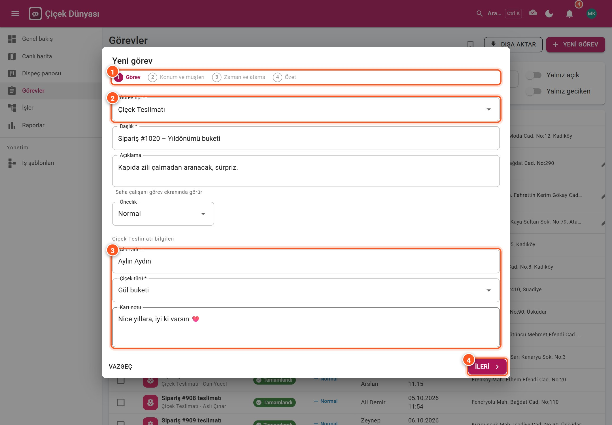
1Adımlar: Görev → Konum ve müşteri → Zaman ve atama → Özet. Tamamlanan adımlar ✓ ile işaretlenir.
2Görev tipi: seçilen tipe göre formdaki özel alanlar değişir.
3Bu tipe özel alanlar (şirketin kendisi tanımlar); zorunlu olanlar * ile işaretli.
4İleri: bu adımın alanları geçerliyse sonraki adıma geçer.
Ekran 4.10
Yeni görev · Adım 2: Konum ve müşteri
Adres yazılarak aranır (OpenStreetMap); seçilen adresin konumu haritaya işlenir. Haritaya tıklanarak da konum seçilebilir; tıklanan noktanın adresi kendiliğinden yazılır.
wfm.sirketiniz.com
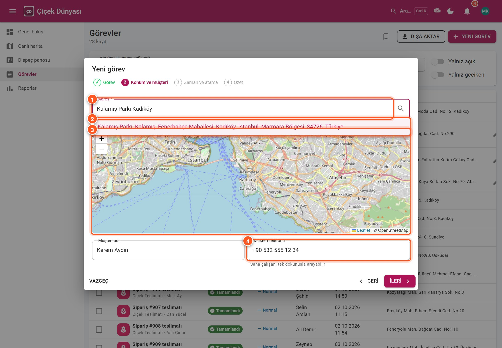
1Adres arama.
2Önerilen adresler.
3Konum haritası: kurye 'Yol tarifi' ile doğrudan buraya yönlendirilir.
4Müşteri adı ve telefonu: saha çalışanı tek dokunuşla arayabilir.
Ekran 4.11
Yeni görev · Adım 3: Zaman ve akıllı atama önerisi
Planlanan zaman aralığı girilir; bitiş saati geçerse görev 'gecikti' sayılır. Sistem, şu an mesaide olan çalışanları görev konumuna uzaklıklarına ve üzerlerindeki açık iş sayısına göre önerir.
wfm.sirketiniz.com
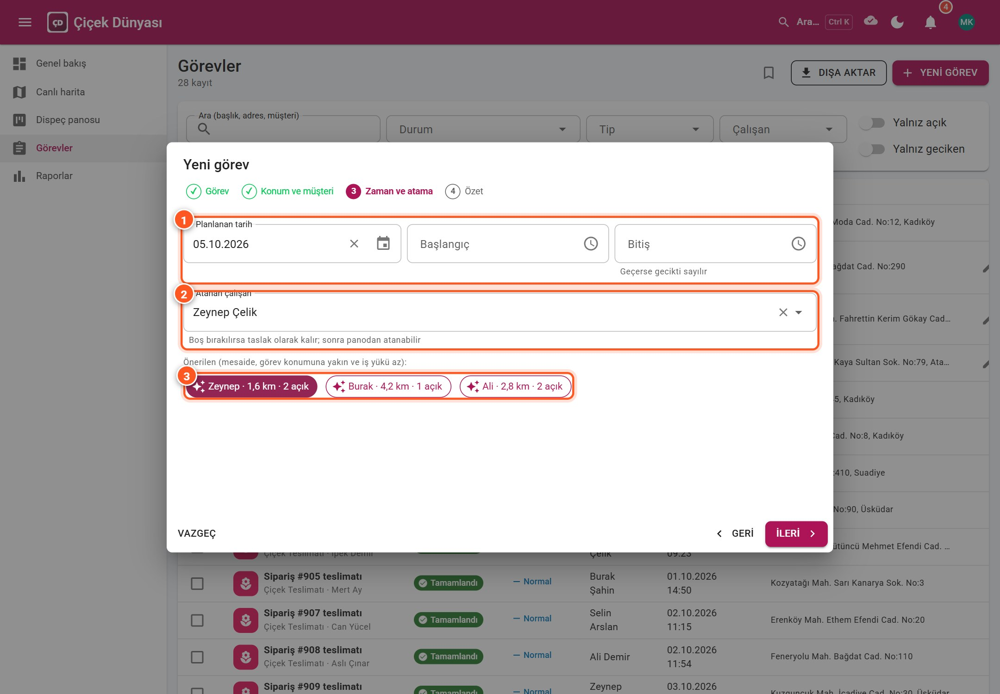
1Planlanan tarih, başlangıç ve bitiş saati.
2Atanan çalışan (boş bırakılırsa taslak kalır, sonra panodan atanabilir).
3Öneri: mesaideki çalışanlar, görev konumuna uzaklık ve açık iş yüküyle; tek tıkla seçilir.
Ekran 4.12
Yeni görev · Adım 4: Özet
Kaydetmeden önce tüm bilgiler tek tabloda kontrol edilir. Kaydedilince görev atanan çalışanın telefonuna anında düşer.
wfm.sirketiniz.com
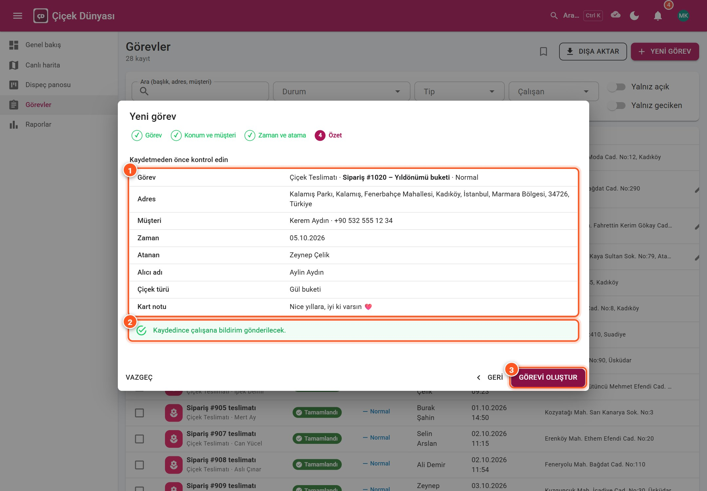
1Özet: görev, adres, müşteri, zaman, atanan kişi ve özel alanlar.
2Kaydedince ne olacağı açıkça yazılır (bildirim gidecek / taslak kalacak).
3Görevi oluştur.
Ekran 4.13
Global arama (Ctrl+K)
Hangi sayfada olursa olsun Ctrl+K ile arama açılır: görevler, adresler, müşteriler, kişiler ve sayfalar tek kutuda aranır; klavyeyle seçilip açılır.
wfm.sirketiniz.com
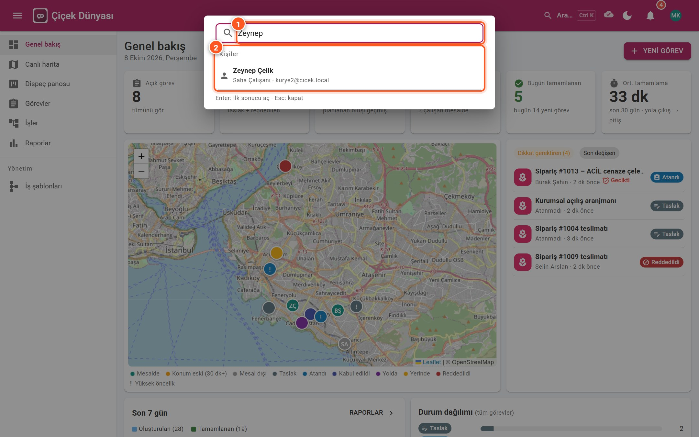
1Arama kutusu.
2Sonuçlar türlerine göre gruplanır; Enter ile açılır.
Ekran 4.14
Görev detayı: teslim kanıtı
Tamamlanan görevin tüm kanıtı tek sayfada: teslim alan kişi, fotoğraf, müşteri imzası ve adım adım zaman çizelgesi. Her adımın yapıldığı konum da kaydedilir. Sayfa yazdırılabilir veya PDF olarak kaydedilebilir; müşteri itirazlarında referans olur.
wfm.sirketiniz.com
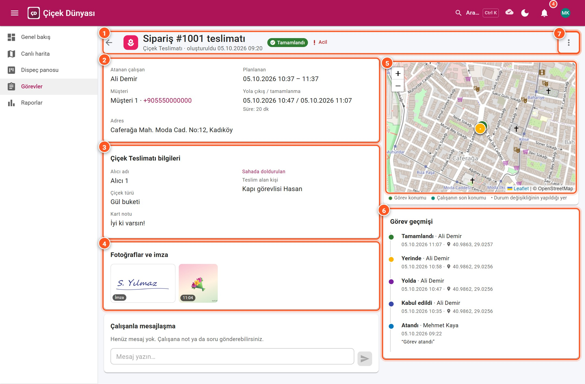
1Görev başlığı, tipi, durumu ve önceliği.
2Atanan kurye, planlanan zaman, müşteri, gerçekleşen yola çıkış / tamamlanma saatleri ve süre.
3Görev oluşturulurken girilen bilgiler (solda) ve kuryenin teslimde doldurduğu bilgiler (sağda).
4Teslim fotoğrafı (çekim saatiyle) ve müşteri imzası; tıklanınca büyük görüntülenir.
5Görev konumu ve her durum değişikliğinin yapıldığı nokta.
6Zaman çizelgesi: atandı → kabul edildi → yolda → yerinde → tamamlandı; kim, ne zaman, nerede.
7Diğer işlemler: yazdır / PDF, iptal, silme.
Ekran 4.15
Görev detayı: devam eden iş ve mesajlaşma
Devam eden görevde dispeçer kuryenin canlı konumunu hedef adresle birlikte izler, görevle ilgili kuryeyle yazışır ve müşteriye canlı takip linki gönderebilir.
wfm.sirketiniz.com
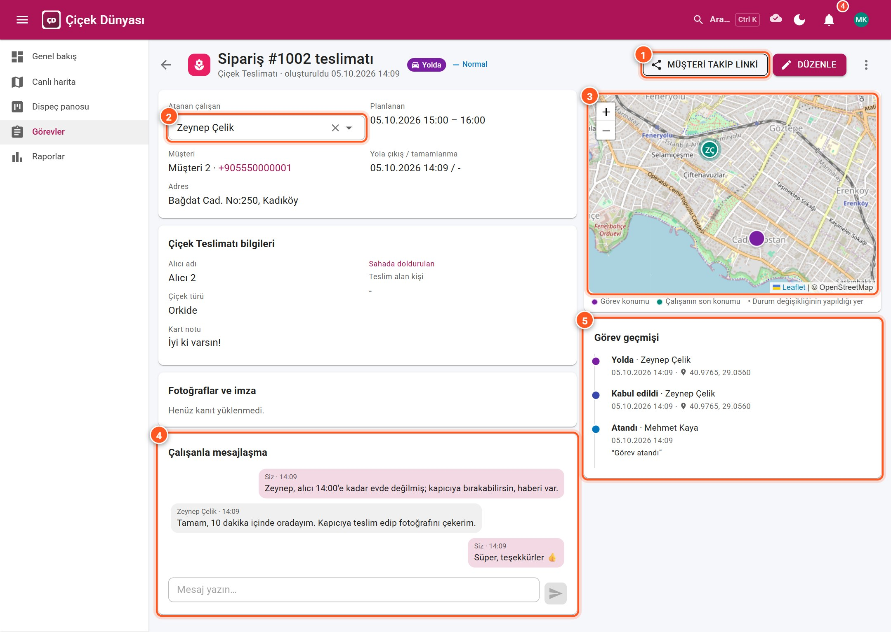
1Müşteri takip linki: oturum gerektirmeyen bir sayfa linki oluşturur; müşteri ekibin yaklaştığını canlı izler (Bölüm 6).
2Yeniden atama: başka bir kurye seçmek yeterli; eski ve yeni kurye bilgilendirilir.
3Hedef adres ve kuryenin canlı konumu aynı haritada.
4Görev içi mesajlaşma: dispeçer ve kurye görev üzerinden anlık yazışır; yeni mesaj bildirim olarak düşer.
5Görevin şu ana kadarki adımları.
Ekran 4.16
Raporlar
Ekip performansı ve iş hacmi. Hazır dönemler veya serbest tarih aralığı seçilebilir; rapor Excel/CSV olarak dışa aktarılabilir.
wfm.sirketiniz.com
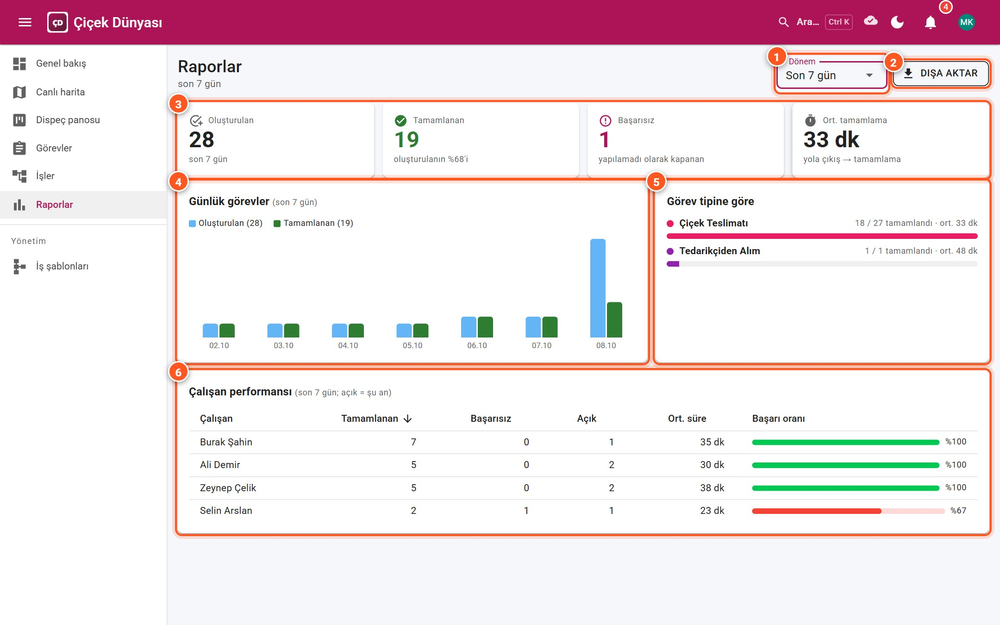
1Dönem: bugün, son 7/30/90 gün, son 1 yıl veya özel aralık.
2Excel / CSV dışa aktarma.
3Dönem özeti: oluşturulan, tamamlanan, başarısız ve ortalama tamamlama süresi.
4Günlük oluşturulan ve tamamlanan görevler.
5Görev tipine göre tamamlama oranı ve ortalama süre.
6Çalışan bazında tamamlanan, başarısız, açık iş, ortalama süre ve başarı oranı.
Ekran 4.17
Dispeçer bildirimleri
Sahadan gelen önemli olaylar dispeçere anında bildirim olarak düşer; ayrıca ekranın altında kısa bir uyarı görünür. Bildirime tıklamak ilgili görevi açar.
wfm.sirketiniz.com
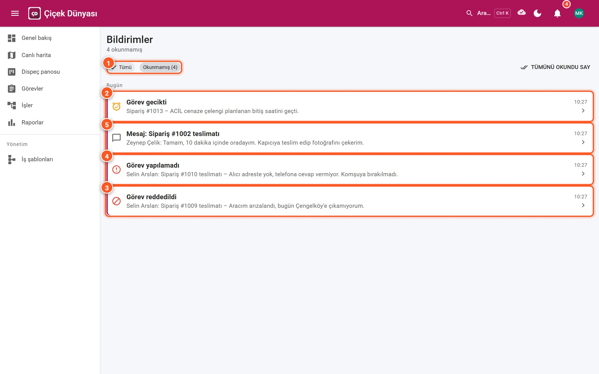
1Tümü / okunmamış filtresi.
2Gecikme: planlanan bitişi geçen görev için otomatik bildirim.
3Ret: kurye görevi gerekçesiyle reddetti; görev başka kuryeye aktarılabilir.
4Yapılamadı: kurye görevi tamamlayamadı (ör. alıcı adreste yok).
5Görev içi yeni mesaj.
Ekran 4.18
Profil, parola ve görünüm
Her kullanıcı kendi bilgilerini ve parolasını değiştirir; açık/koyu tema ve yüksek kontrast tercihini belirler.
wfm.sirketiniz.com
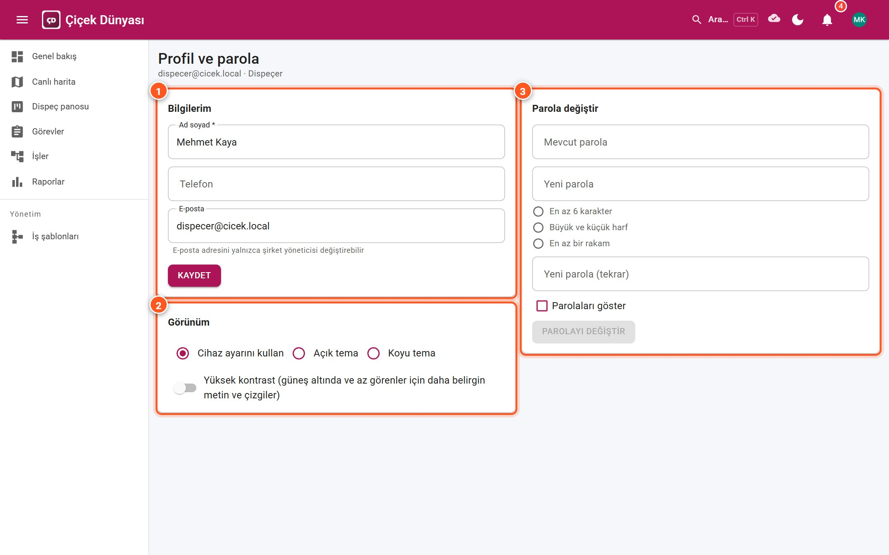
1Ad ve telefon (e-postayı yalnızca şirket yöneticisi değiştirir).
2Tema: cihaz ayarı, açık veya koyu; yüksek kontrast.
3Parola değiştirme: kurallar yazarken canlı kontrol edilir.
Ekran 4.19
Görev tipleri
Sistemin esnekliği buradan gelir: her şirket kendi iş türlerini tanımlar. Çiçekçi 'Çiçek Teslimatı', tamirci 'Arıza Onarımı', temizlik firması 'Ev Temizliği' tanımlayabilir. Yazılım değişikliği gerekmez.
wfm.sirketiniz.com
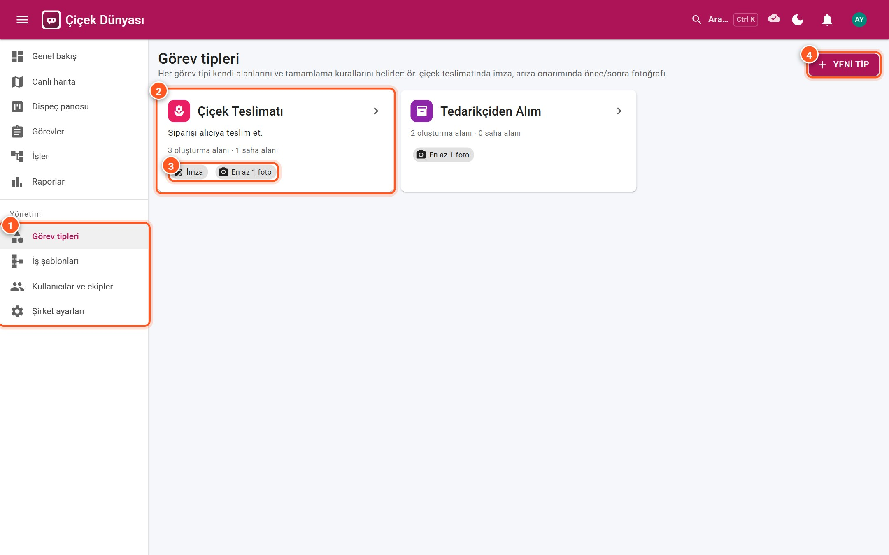
1Yönetim menüsü yalnızca şirket yöneticisinde görünür.
2Görev tipi kartı: ad, simge, renk, alan sayıları.
3Tamamlama kuralları: bu tipte görev kapatılırken imza ve en az 1 fotoğraf zorunlu.
4Yeni görev tipi.
Ekran 4.20
Görev tipi düzenleyici
Şirket yöneticisi görev tipine özel form alanlarını ve tamamlama kurallarını kendisi tasarlar. Önizleme, formun dispeçere ve sahadaki çalışana nasıl görüneceğini gösterir.
wfm.sirketiniz.com
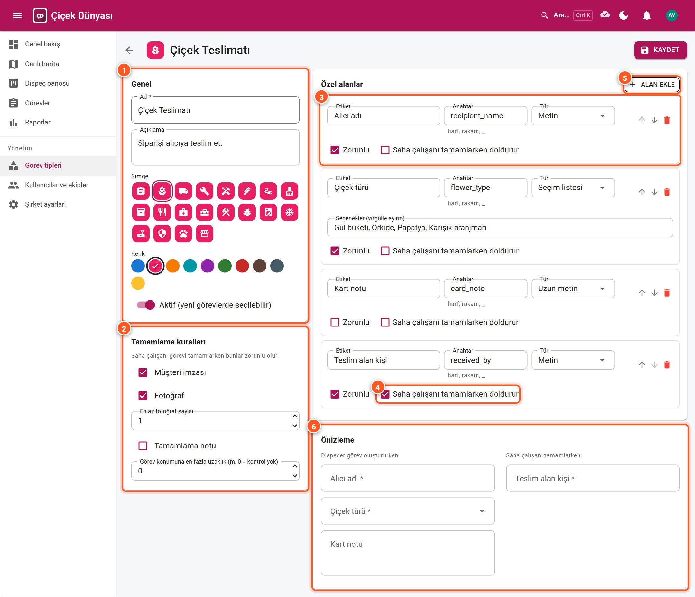
1Ad, açıklama, simge ve renk.
2Tamamlama kuralları: müşteri imzası, fotoğraf sayısı, not zorunluluğu, görev adresine en fazla uzaklık (kurye adrese gitmeden 'tamamlandı' diyemez).
3Özel alan: etiket, anahtar ve tür (metin, sayı, seçim listesi, tarih, onay kutusu, uzun metin, telefon); sıralama ve silme.
4Alanı kim doldurur? İşaretliyse teslim anında saha çalışanından istenir; değilse dispeçer görev oluştururken doldurur.
5Yeni alan ekle.
6Canlı önizleme: dispeçer formu ve saha tamamlama formu.
Ekran 4.21
Kullanıcılar ve ekipler
Şirket yöneticisi çalışanları ekler, rollerini belirler ve ekiplere ayırır. Pasif yapılan kullanıcının oturumu hemen sonlandırılır.
wfm.sirketiniz.com
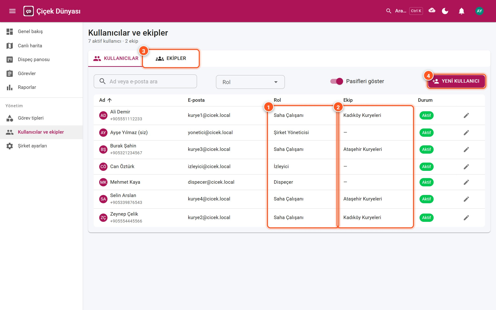
1Rol: Şirket Yöneticisi, Dispeçer, Saha Çalışanı veya İzleyici.
Rol seçildiğinde o rolün neler yapabileceği açıklanır. Saha çalışanı rolü verilen kişi mobil uygulamaya bu e-posta ve parolayla girer.
wfm.sirketiniz.com
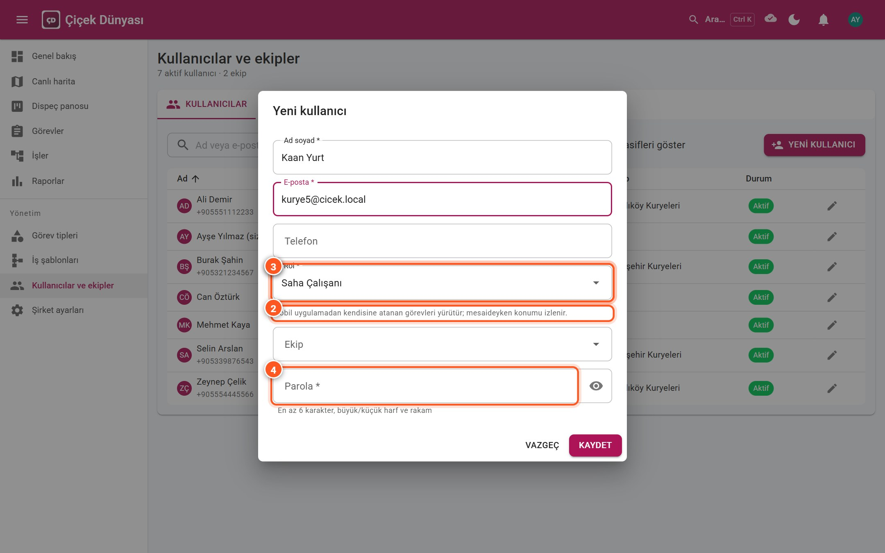
1Rol seçimi.
2Seçilen rolün yetki açıklaması.
3Ekip.
4İlk parola.
Ekran 4.23
Şirket ayarları: marka ve harita
Her şirket uygulamayı kendi markasıyla kullanır: ana renk ve logo tüm kullanıcılar için üst barda, giriş ekranında ve müşteri takip sayfasında görünür.
wfm.sirketiniz.com
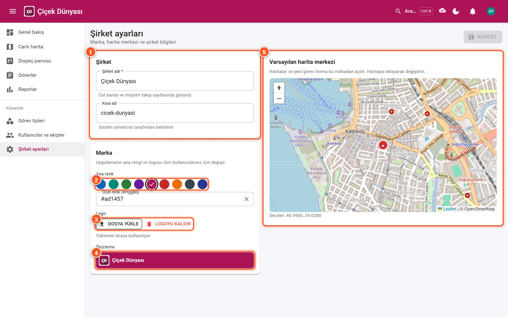
1Şirket adı ve kısa ad (giriş linkinde kullanılır).
2Ana renk: hazır renkler veya özel renk kodu.
3Logo: dosya yükleme veya https adresi.
4Üst bar önizlemesi.
5Varsayılan harita merkezi: haritalar ve yeni görev formu bu noktadan açılır.
Ekran 4.24
Koyu tema
Gece vardiyasında veya karanlık ortamda göz yormayan koyu tema. Her kullanıcı kendi tercihini profilinden seçer; 'cihaz ayarını kullan' seçiliyse işletim sisteminin temasına uyar.
wfm.sirketiniz.com
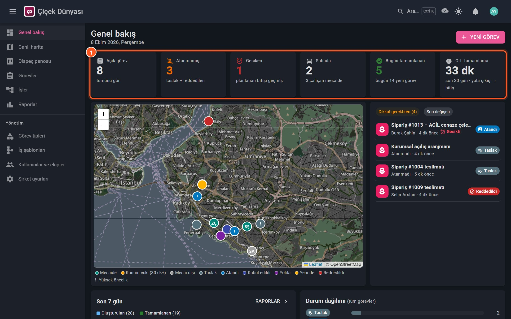
1Tüm ekranlar koyu temada da aynı düzen ve renk anlamlarıyla çalışır.
5
Mobil Uygulama (Saha Çalışanı)
Kurye, teknisyen gibi saha çalışanlarının iOS ve Android telefonlarda kullandığı uygulama. Sade, büyük butonlu ve internet olmadan da çalışır.
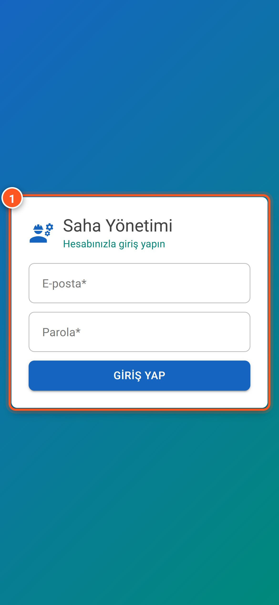
Ekran 5.1
Mobil giriş
Saha çalışanı, yöneticisinin verdiği e-posta ve parolayla giriş yapar. Oturum telefonun güvenli deposunda (iOS Keychain / Android Keystore) saklanır; her açılışta yeniden giriş gerekmez.
1Şirket markalı giriş formu.
Ekran 5.2
Görevlerim
Kuryenin ana ekranı: sıradaki görev en üstte, diğerleri öncelik ve saat sırasıyla. Aşağı çekerek yenilenir.
1Mesai: açıkken konum arka planda yöneticiyle paylaşılır (Android'de kalıcı bildirimle), 'Mesaiyi bitir' ile durur. Mesai dışında konum izlenmez.
2Liste / harita görünümü.
3Aktif, biten ve reddettiğim görevler.
4Sıradaki görev: tip, adres, saat aralığı ve durum.
5Bildirimler.
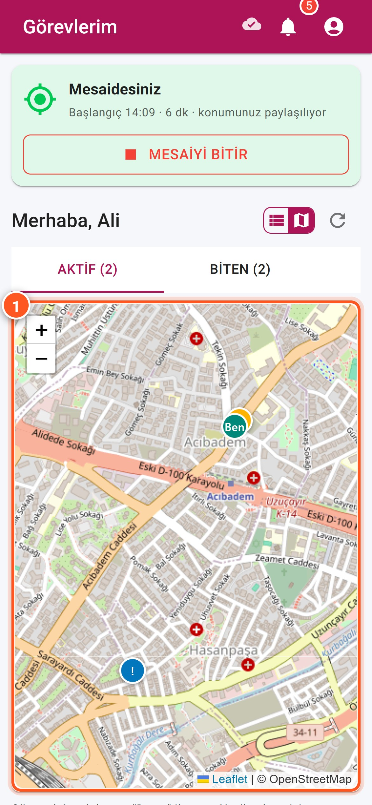
Ekran 5.3
Görevler haritada
Kurye günün görevlerini haritada görür ve rotasını kendisi planlayabilir.
1Görevler (durum rengine göre) ve kuryenin kendi konumu.
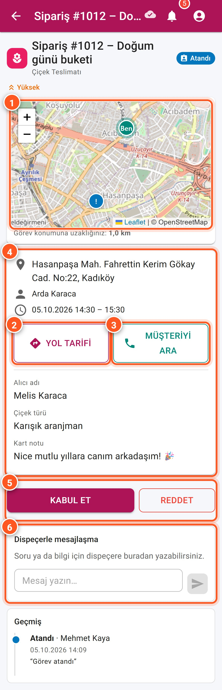
Ekran 5.4
Yeni atanan görev
Kurye görevin tüm bilgilerini görür, kabul eder veya gerekçesiyle reddeder.
1Harita: görev noktası ve kuryenin konumu; altta görev konumuna uzaklık.
2Yol tarifi: telefonun harita uygulamasını (Google Maps / Apple Haritalar) hedef adresle açar.
3Müşteriyi tek dokunuşla arama.
4Dispeçerin girdiği sipariş bilgileri.
5Kabul et / Reddet (ekranın altında sabit, tek elle kullanılır).
6Dispeçerle mesajlaşma.
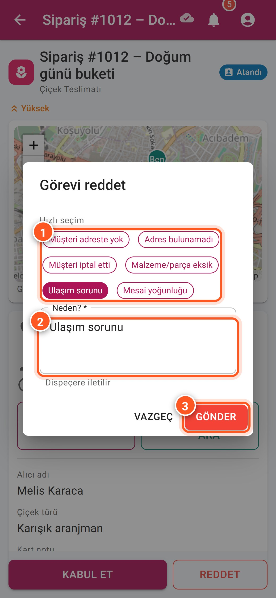
Ekran 5.5
Görevi reddetme
Kurye görevi yapamayacaksa hızlı seçimlerden birine dokunarak veya kendisi yazarak gerekçe verir. Dispeçere anında bildirim düşer.
1Hızlı gerekçeler: müşteri adreste yok, adres bulunamadı, ulaşım sorunu…
2Gerekçe metni (düzenlenebilir).
3Gönder: görev 'Reddedildi' olur.
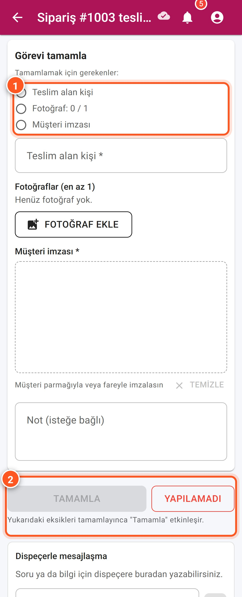
Ekran 5.6
Tamamlama kontrol listesi
Kurye 'Vardım' dediğinde tamamlama formu açılır. Görev tipinin kuralları canlı bir kontrol listesi olarak gösterilir; hepsi karşılanmadan 'Tamamla' düğmesi etkinleşmez. Kurallar internet olmasa da telefonda uygulanır.
1Gerekenler: teslim alan kişi, en az 1 fotoğraf, müşteri imzası.
2'Tamamla' eksikler bitene kadar pasif; 'Yapılamadı' her zaman kullanılabilir.
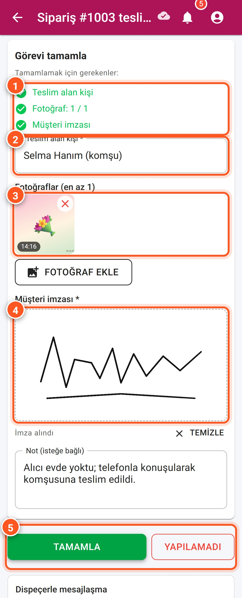
Ekran 5.7
Teslim ve tamamlama
Kurye teslim alan kişiyi yazar, fotoğraf çeker ve müşteriye ekranda imza attırır; kontrol listesi yeşile döner ve 'Tamamla' etkinleşir. Fotoğraflar telefonda küçültülerek yüklenir; internet yoksa telefonda bekletilip bağlantı gelince gönderilir.
1Tüm gereksinimler karşılandı (yeşil).
2Sahada doldurulan alan.
3Fotoğraflar (çekim saatiyle); mobil uygulamada 'Fotoğraf çek' kamerayı açar.
4Müşteri imzası: parmakla ekrana.
5Tamamla: dispeçerin ekranı anında güncellenir.
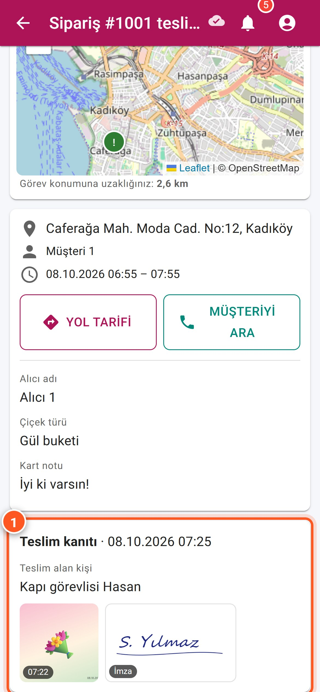
Ekran 5.8
Tamamlanan görev
Kurye tamamladığı görevin kanıtını ve geçmişini görebilir.
1Teslim kanıtı: teslim alan kişi, fotoğraf ve imza.
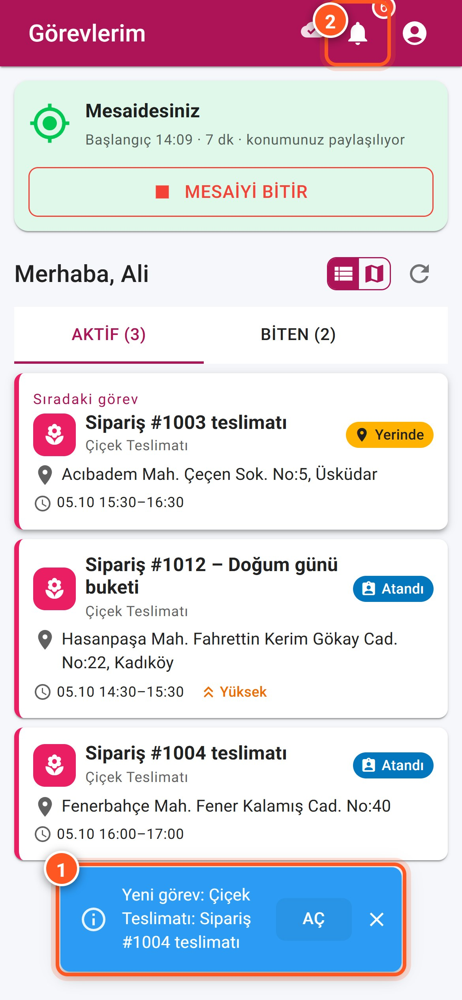
Ekran 5.9
Anlık görev bildirimi
Dispeçer görev atadığı anda kuryeye bildirim gelir ve liste kendiliğinden güncellenir. Uygulama arka plandaysa telefonun bildirim alanında görünür.
1Yeni görev bildirimi; 'Aç' ile doğrudan göreve gidilir.
2Okunmamış bildirim sayısı.
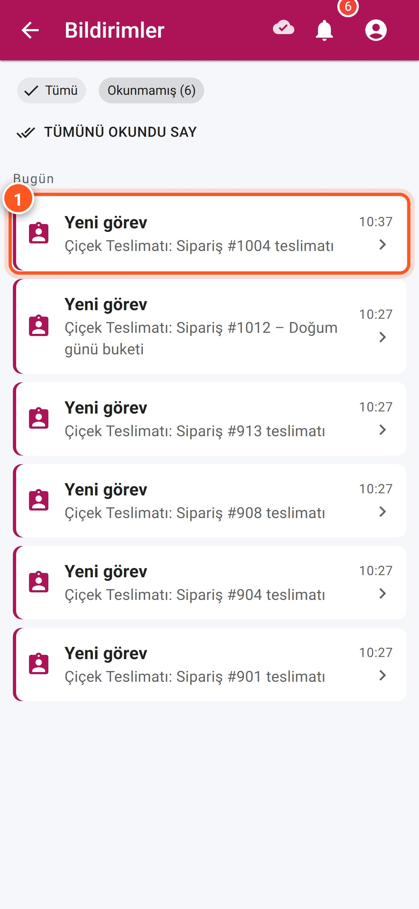
Ekran 5.10
Bildirim geçmişi
Kuryeye gelen tüm bildirimler, güne göre gruplanmış. Uygulama kapalıyken kaçırılanlar açılışta buraya gelir.
1Bildirim; dokununca ilgili görev açılır.
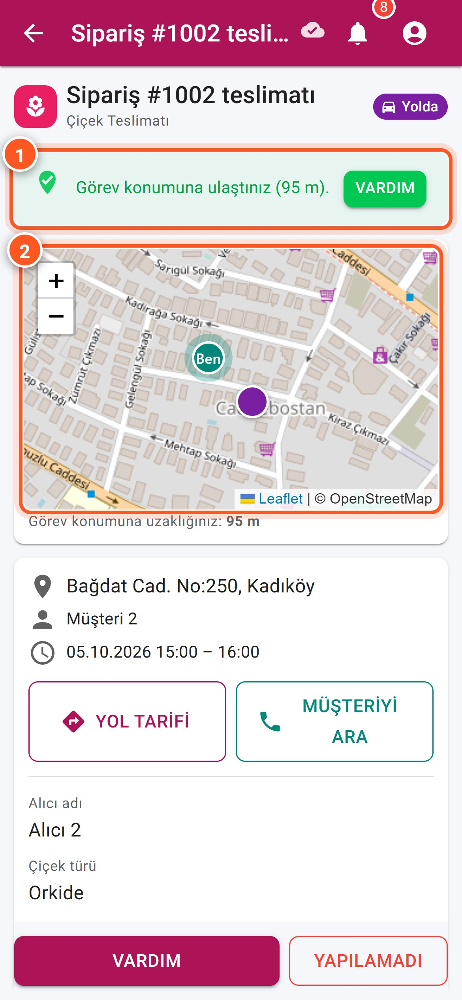
Ekran 5.11
Varış algılama
Kurye görev adresine yaklaşınca (~150 m) uygulama bunu fark eder ve 'Vardım' önerir. Uygulama arka plandaysa öneri telefon bildirimi olarak gelir; kurye ekrana bakmadan durumu güncelleyebilir.
1Görev konumuna ulaştınız: tek dokunuşla 'Vardım'.
2Hedef ve kuryenin konumu; altta kalan mesafe.
6
Müşteri Takip Sayfası
Siparişi bekleyen son müşteriye, uygulama indirmeden ve giriş yapmadan açılan canlı takip linki.
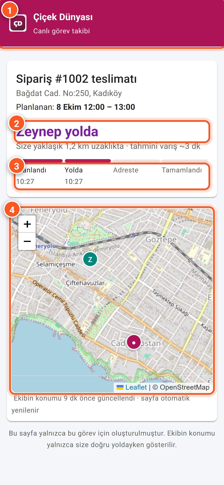
Ekran 6.1
Müşterinin gördüğü canlı takip sayfası
Dispeçerin paylaştığı linki açan müşteri, uygulama indirmeden ve giriş yapmadan siparişinin durumunu izler. Kuryenin konumu yalnızca görev 'Yolda' iken gösterilir; link görev kapandıktan bir gün sonra geçersiz olur.
1Şirketin logosu, adı ve rengi.
2Durum ve tahmini varış: kuryenin uzaklığı ve yaklaşık süre.
3Adım göstergesi: planlandı → yolda → adreste → tamamlandı (saatleriyle).
4Canlı harita: kurye ve teslimat adresi; sayfa kendiliğinden yenilenir.
7
Aynı Sistem, Farklı Sektör
Sistem tek bir sektöre bağlı değildir. Aynı platformda çiçekçi, tamirci, temizlik veya kargo firması kendi iş türleri, logosu ve rengiyle çalışabilir.
Ekran 7.1
Tamirci firması: arıza onarımı
Aynı yazılım, farklı bir şirket ve iş türü. 'Hızlı Tamir' firmasının teknisyeni kombi arızasına gönderildi. Ekran bu firmanın turuncu marka rengi ve logosuyla açılır; formdaki alanlar ve kanıtlar firmanın tanımladığı 'Arıza Onarımı' tipine göre oluşur. Şirketlerin verileri birbirinden tamamen ayrıdır.
wfm.sirketiniz.com
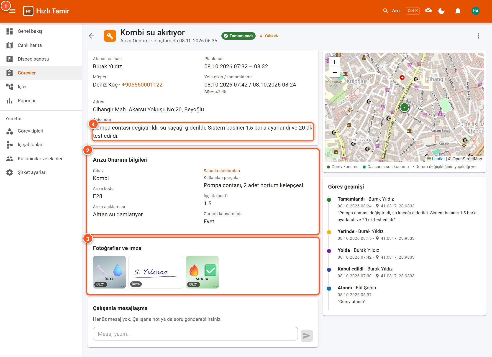
1Şirketin kendi logosu, adı ve rengi. Çiçekçi tamircinin görevlerini, çalışanlarını veya konumlarını göremez.
2Bu tipe özel alanlar: cihaz, arıza kodu, arıza açıklaması; teknisyenin doldurduğu kullanılan parçalar, işçilik süresi ve garanti.
3Bu tipte en az 2 fotoğraf zorunlu: onarım öncesi ve sonrası; ayrıca müşteri imzası.
4Tamamlama notu zorunlu: teknisyenin yaptığı işin açıklaması.
Ekran 7.2
Tamirci firmasının görev tipleri
Tamirci kendi iş türlerini tanımladı: 'Arıza Onarımı' (2 fotoğraf, imza ve not zorunlu) ve 'Montaj' (yalnızca imza).
wfm.sirketiniz.com
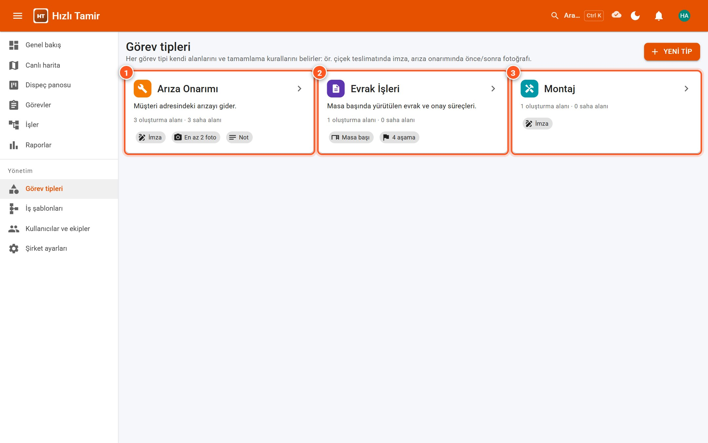
1Arıza Onarımı: 6 özel alan; imza, en az 2 fotoğraf ve not zorunlu.
2Montaj: daha basit bir iş türü, yalnızca imza zorunlu.
Ekran 7.3
Sistem yöneticisi: şirketler
Platformu işleten taraf yeni müşteri şirketleri buradan ekler. Her şirket kendi yöneticisiyle başlar; o yönetici çalışanlarını, iş türlerini ve görevlerini kendisi yönetir.
wfm.sirketiniz.com
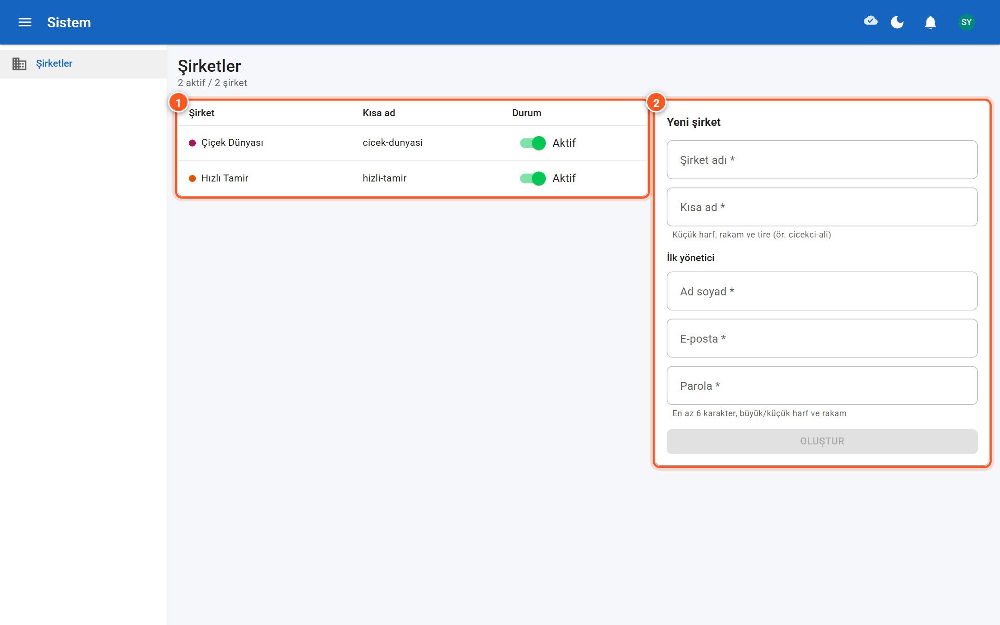
1Platformdaki şirketler. Pasif yapılan şirketin kullanıcıları giriş yapamaz.
2Yeni şirket ve ilk yöneticisinin oluşturulması.
8
Konum takibi, bildirimler ve internetsiz çalışma
Ekranlarda görünmeyen ama sahada işin sorunsuz yürümesini sağlayan altyapı.
📍
Konum takibi yalnızca mesaide
Çalışan "Mesai" anahtarını açtığında konum paylaşımı başlar, kapattığında durur. Telefon cebindeyken ve uygulama arka plandayken de devam eder (Android'de bildirim çubuğunda "Mesaidesiniz" uyarısı görünür, iOS'ta konum göstergesi yanar). Konum en sık 30 saniyede bir veya 20 metre harekette gönderilir; pil seviyesi de iletilir. Eski konum kayıtları şirketin belirlediği süre sonunda (varsayılan 30 gün) otomatik silinir.
🔔
Anlık bildirimler
Görev atandığında, geri alındığında veya iptal edildiğinde çalışana; görev reddedildiğinde veya yapılamadığında dispeçere anında bildirim gider. Uygulama açıkken ekranda, arka plandayken telefonun bildirim alanında görünür. Uygulama tamamen kapalıyken kaçırılan bildirimler, uygulama açıldığında listeye gelir.
İnternet yokken ne olur?
İnternet yokken de görev tipinin kuralları telefonda kontrol edilir: imza veya fotoğraf eksikse görev kapatılamaz.
9
Kapsam, sınırlar ve onay
Bu sürümde teslim edilenler ve dikkat edilmesi gereken noktalar.
Konu
Bu sürümde
Platformlar
Web paneli (tüm modern tarayıcılar), iOS ve Android uygulaması. Saha ekranları web'den de kullanılabilir (bu durumda konum yalnızca sayfa açıkken paylaşılır).
Harita
OpenStreetMap haritası ve adres araması. Yol tarifi için telefonun kendi harita uygulaması açılır (Google Maps / Apple Haritalar).
Bildirimler
Uygulama içi canlı bildirim + uygulama arka plandayken telefon bildirimi.
Veri ayrımı
Her şirketin görevleri, kullanıcıları, konumları ve dosyaları birbirinden ayrıdır.
Dışa aktarma
Görev listesi ve raporlar Excel (.xlsx) veya CSV olarak; görev detayı yazdırılabilir / PDF.
Parola sıfırlama
E-posta altyapısı yok: "Parolamı unuttum" talebi şirket yöneticisine bildirim olarak gider, yönetici yeni parola belirler.
Bilinmesi gereken sınırlar
• Uygulama telefonda tamamen kapatılmışsa (özellikle iPhone'da) anlık bildirim ulaşmaz; uygulama açıldığında kaçırılan görevler ve bildirimler listelenir. Kapalı uygulamaya da bildirim istenirse Apple/Google bildirim servisleri ek geliştirme olarak eklenebilir.
• Arka planda konum için çalışanın telefonda "Her zaman" konum izni vermesi gerekir; vermezse konum yalnızca uygulama açıkken paylaşılır.
• Yoğun kullanımda harita ve adres araması için ücretli bir harita sağlayıcısına veya kendi harita sunucunuza geçilmesi önerilir.
Onay listesi
Web paneli ekranları ve menü yapısı (Bölüm 4)
Mobil uygulama akışı: kabul → yola çıktım → vardım → kontrol listesi ve kanıt → tamamla (Bölüm 5)
Roller ve yetkiler tablosu (Bölüm 3)
Görev tiplerinin şirket tarafından tanımlanması ve tamamlama kuralları (Bölüm 3, 4 ve 7)
Müşteri takip linki ve gösterilen bilgiler (Bölüm 6)
Konum takibinin yalnızca mesai süresince yapılması (Bölüm 8)